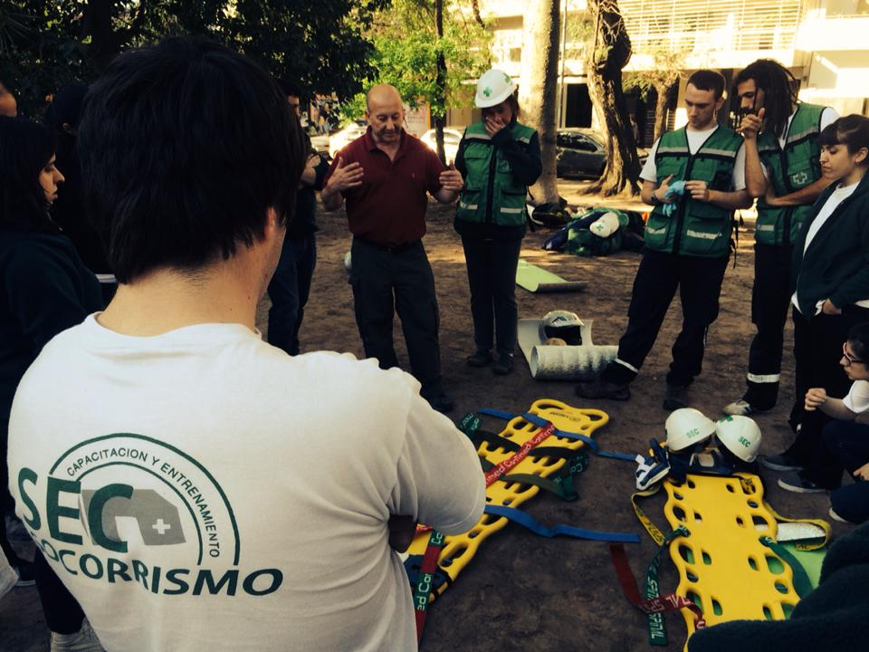
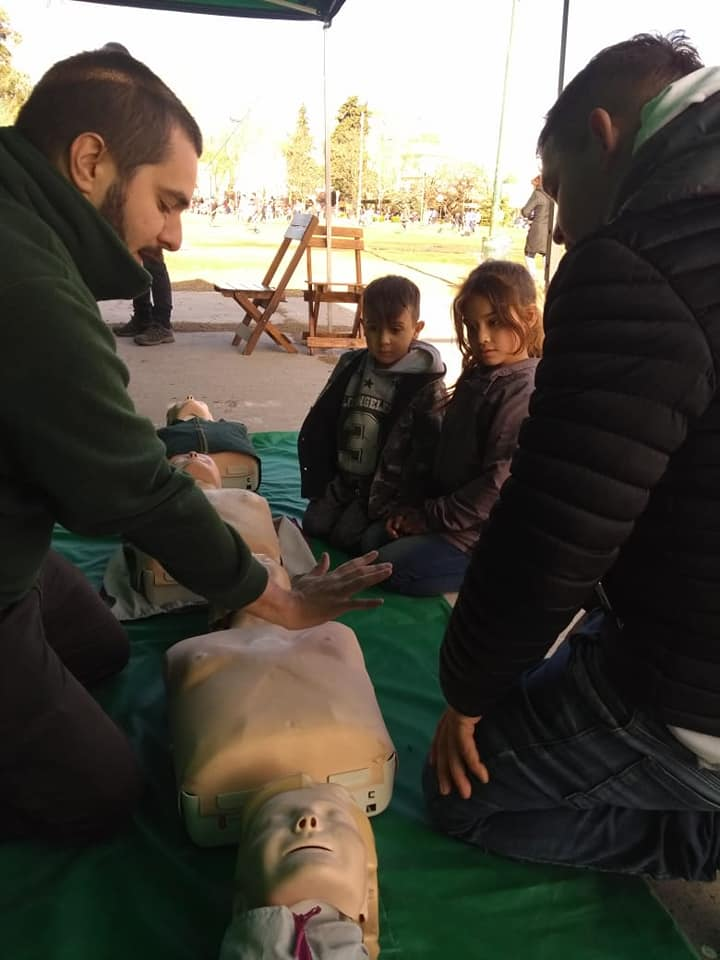
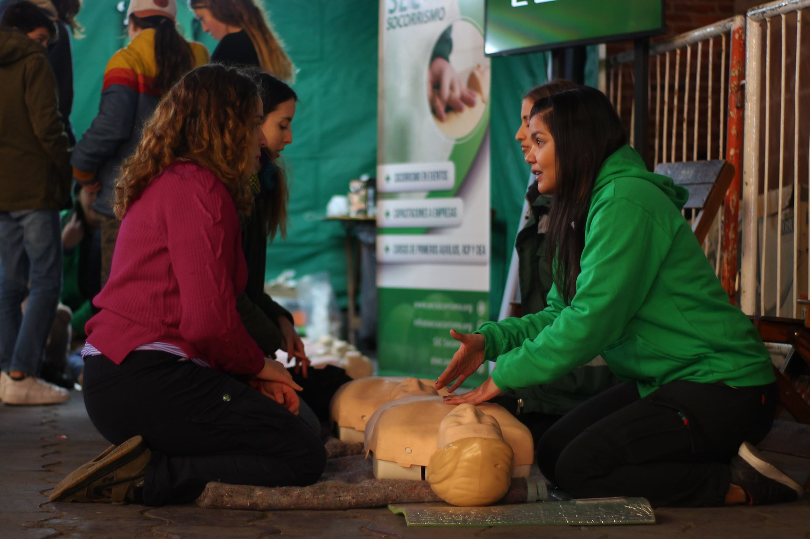

1- Primeros Auxilios + Soporte Vital Básico con RCP y DEA
La presente propuesta es una actividad coordinada; será realizada bajo inscripción previa, ya que tiene una capacidad limitada a treinta (30) personas por curso. Está exclusivamente a quienes tengan interés en aprender primeros auxilios, y tiene una duración aproximada de 4 horas (con un intervalo de 15 minutos para refrigerio). El curso será dictado según las normativas vigentes, por instructores certificados y avalados internacionalmente. Cada vecino participante recibirá una guía de clase en PDF y, al finalizar, el correspondiente certificado de asistencia.
Contenido
- Primeros Auxilios
- Seguridad de la escena, barreras para actuar, bioseguridad, consentimiento e implicancia legal.
- Cómo llamar al Servicio de Emergencias.
- Hemorragias.
- Heridas Especiales
- Alteraciones por calor (insolación).
- Quemaduras por calor, electricidad y químicos.
- Hipotermia.
- Traumatismos esqueléticos (contusión, esguince, etc.).
- Intoxicaciones (alimenticias, farmacológicas, por drogas ilícitas, por alcohol).
- Desmayo.
- Emergencia Diabética.
- Convulsiones.
- Cómo armar un botiquín.
- Maniobra de Heimlich (atragantamiento)
- Cómo reconocer un ACV.
- Aplicación de la cadena de supervivencia.
- Cómo reconocer un paro cardíaco.
- Reanimación Cardiopulmonar (RCP) en adultos, niños y bebes.
- Uso del Desfibrilador Externo Automático (DEA).
- Práctica de RCP y de uso de DEA con muñecos simuladores LAERDAL de alta calidad.
2- Enseñanza de RCP y de uso de DEA en espacios públicos durante fines de semana y feriados, y en eventos especiales.
En esta oportunidad se propone la enseñanza, en espacios públicos en distintos días y horarios, de manera que cualquier persona que tenga unos minutos pueda aprender la maniobra básica de RCP y la utilización de un Desfibrilador Externo Automático (DEA). Está dirigida al público en general. La actividad tiene una duración aproximada de 20 minutos, por lo cual, a lo largo de una jornada de 6 horas, se puede concientizar a más de 400 vecinos por día.
Contenido
- 
- Cómo reconocer un paro cardíaco
- Cómo llamar al Servicio de Emergencias
- Reanimación Cardiopulmonar (RCP) en adultos
- Uso del Desfibrilador Externo Automático (DEA)
- Práctica de RCP y de uso de DEA con muñecos simuladores LAERDAL de alta calidad.